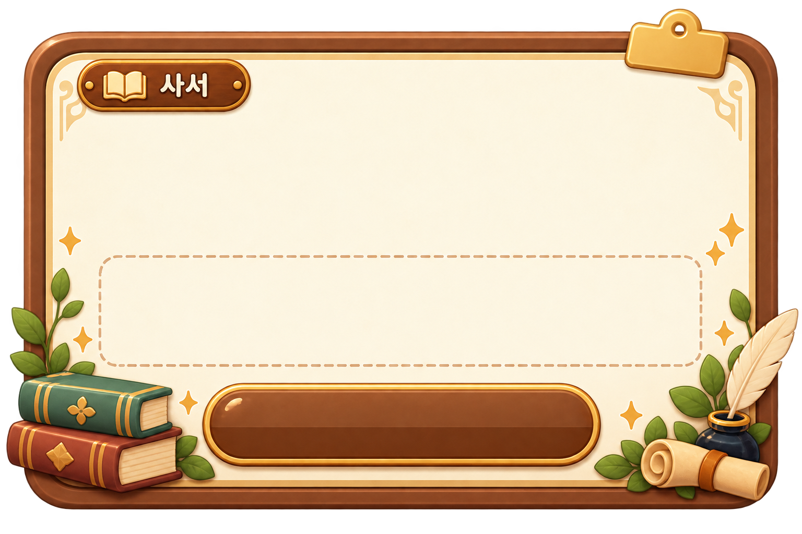

서고에 보관된 사춘기 책들이 뒤섞였어요!
책을 펼쳐 내용을 읽고, 제가 찾는 책을 찾아주세요!
책을 펼쳐 내용을 읽고, 제가 찾는 책을 찾아주세요!

미션 1 성공!
월경과 배란에 관한 책을
모두 찾았어요!
사서의 두 번째 부탁
미션 2 · 잘못된 기록 찾기
미션 1 · 비밀 책 찾기1 / 2
“월경”에 관한 책을 찾고 있어요.해당 내용이 적힌 책을 찾아주세요!
책장에서 한 권을 눌러 내용을 살펴보세요.
책을 누르면 이곳에 펼쳐져요.
사춘기의
비밀 책제01권
비밀 책제01권
찾기 완료!
마을지도와 연결할 때는 통합 파일을 지도 프로젝트의
zones/zone2.html 위치에 배치해 주세요.